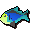

")
Cooking - Members' Food
For level requirements to catch the fish in the table below, please see the members' Fishing table. Members not only have access to all the non-member foods, but they will also have access to the following:
| Food | Level Required |
Cooking Method | Heals | Quest Required | Experience Gained |
![[image]](../../img/main/kbase/items/food/fish/karambwanji.gif) Karambwanji Karambwanji |
1 |
Fire/Range | 30 | Tai Bwo Wannai Trio | 10 |
![[image]](../../img/main/kbase/items/food/fish/poorly_cooked_karambwan.gif) Karambwan Karambwan(poorly cooked) |
1 |
Fire/Range | Poisons 50 | Tai Bwo Wannai Trio | 80 |
![[image]](../../img/main/kbase/skills/hunter/items/cooked_pawya.gif) Cooked pawya Cooked pawya |
1 |
Fire/Range | 30 | n/a | 30 |
![[image]](../../img/main/kbase/skills/hunter/items/cookedrabbit.gif) Cooked rabbit Cooked rabbit |
1 |
Fire/Range | 50 | n/a | 30 |
![[image]](../../img/main/kbase/items/food/baked/potato_baked.gif) Baked potato |
7 |
Range | 40 | n/a | 15 |
![[image]](../../img/main/kbase/items/food/baked/bowl_chilli.gif) Spicy sauce |
9 |
Range | 20 | n/a | 25 |
![[image]](../../img/main/kbase/items/food/fish/mackerel.gif) Mackerel Mackerel |
10 |
Fire/Range | 60 | n/a | 60 |
![[image]](../../img/main/kbase/items/food/baked/bowl_chilliconcarne.gif) Chilli con carne |
11 |
Range | 50 | n/a | 55 |
![[image]](../../img/main/kbase/items/food/meat/thin_snail.gif) Thin snail Thin snail |
12 |
Fire/Range | 50 to 70 | n/a | 70 |
![[image]](../../img/main/kbase/items/food/baked/bowl_scrambledegg.gif) Scrambled egg |
13 |
Range | 50 | n/a | 50 |
![[image]](../../img/main/kbase/skills/hunter/items/roastedrabbit.gif) Roasted rabbit Roasted rabbit |
16 |
Spit | 70 | n/a | 72 |
![[image]](../../img/main/kbase/items/food/meat/spider_on_stick.gif) Jungle spider Jungle spider |
16 |
Fire/Range | 70 to 110 | Tai Bwo Wannai Trio | 80 |
![[image]](../../img/main/kbase/items/food/meat/lean_snail.gif) Lean snail Lean snail |
17 |
Fire/Range | 60 to 80 | n/a | 80 |
![[image]](../../img/main/kbase/items/food/fish/cod.gif) Cod Cod |
18 |
Fire/Range | 70 | n/a | 75 |
![[image]](../../img/main/kbase/skills/hunter/items/beastmeat.gif) Roasted beast meat Roasted beast meat |
21 |
Spit | 80 | n/a | 82 |
![[image]](../../img/main/kbase/guides/hundredquest/crab_meat_cooked.gif) Crab meat |
21 |
Fire/Range | 100 (5 bites of 20 each) |
Recipe for Disaster | 100 |
![[image]](../../img/main/kbase/items/food/meat/fat_snail.gif) Fat snail Fat snail |
22 |
Fire/Range | 70 to 90 | n/a | 95 |
![[image]](../../img/main/kbase/items/food/baked/bowl_eggtomato.gif) Egg and tomato |
23 |
Player-made | 80 | n/a | 50 |
![[image]](../../img/main/kbase/items/food/fish/slimey_eel.gif) Slimy eel Slimy eel |
28 |
Fire/Range | 60 to 100 | Heroes' Quest | 95 |
![[image]](../../img/main/kbase/items/food/other/sweetcorn_cooked.gif) Sweetcorn Sweetcorn |
28 |
Fire/Range | 20 to 100 | n/a | 104 |
![[image]](../../img/main/kbase/items/food/baked/mud_pie.gif) Mud pie Mud pie |
29 |
Range | 0 (Halves run energy) |
n/a | 128 |
![[image]](../../img/main/kbase/items/food/meat/chompy_bird.gif) Chompy Chompy |
30 |
Spit | 100 | Big Chompy Bird Hunting | 140 |
![[image]](../../img/main/kbase/items/food/fish/karambwan.gif) Karambwan Karambwan(thoroughly cooked) |
30 |
Fire/Range | 180 | Tai Bwo Wannai Trio | 190 |
![[image]](../../img/main/kbase/guides/hundredquest/fishcake.gif) Fishcake |
31 |
Fire/Range | 110 | Recipe for Disaster | 100 |
![[image]](../../img/main/kbase/items/food/baked/veg_pie.gif) Garden pie Garden pie |
34 |
Range | 120 (+3 Farming) |
n/a | 138 |
| Rainbow fish | 35 |
Fire/Range | 110 | n/a | 110 |
![[image]](../../img/main/kbase/items/food/fish/cave_eel.gif) Cave eel Cave eel |
38 |
Fire/Range | 80 to 120 | n/a | 115 |
![[image]](../../img/main/kbase/items/food/baked/potato_buttered.gif) Baked potato with butter Baked potato with butter |
39 |
Player-made | 140 | n/a | 95.5* |
![[image]](../../img/main/kbase/guides/hundredquest/jubbly3.gif) Jubbly |
41 |
Fire/Spit | 150 | Recipe for Disaster | 160 |
![[image]](../../img/main/kbase/items/food/baked/potato_chillicarne.gif) Chilli potato |
41 |
Player-made | 140 | n/a | 165.5* |
![[image]](../../img/main/kbase/items/food/baked/bowl_friedonion.gif) Fried onions |
42 |
Range | 50 | n/a | 60 |
![[image]](../../img/main/kbase/items/food/fish/bass.gif) Bass Bass |
43 |
Fire/Range | 130 | n/a | 130 |
![[image]](../../img/main/kbase/items/food/baked/bowl_friedmushroom.gif) Fried mushrooms |
46 |
Player-made | 50 | n/a | 60 |
![[image]](../../img/main/kbase/items/food/baked/fish_pie.gif) Fish pie Fish pie |
47 |
Range | 120 (+3 Fishing) |
n/a | 164 |
![[image]](../../img/main/kbase/items/food/baked/potato_cheese.gif) Baked potato with cheese Baked potato with cheese |
47 |
Player-made | 160 | n/a | 199.5* |
![[image]](../../img/main/kbase/items/food/other/cheese.gif) Cheese |
48 |
Churning | 20 | n/a | 64 |
![[image]](../../img/main/kbase/items/food/meat/oomlie_wrap.gif) Oomlie wrap Oomlie wrap |
50 |
Range | 140 | Legends' Quest | 30 |
![[image]](../../img/main/kbase/items/food/baked/potato_tomatoegg.gif) Egg and tomato potato |
51 |
Range | 160 | n/a | 195.5* |
![[image]](../../img/main/kbase/items/food/fish/lava_eel.gif) Lava eel Lava eel |
53 |
Fire/Range | 110 | Heroes' Quest | 30 |
![[image]](../../img/main/kbase/items/food/baked/bowl_mushroom_onion.gif) Mushroom and onion |
57 |
Player-made | 110 | n/a | 120 |
![[image]](../../img/main/kbase/items/food/baked/pitta_bread.gif) Pitta bread Pitta bread |
58 |
Range | Cannot be eaten by itself | n/a | 40 |
![[image]](../../img/main/kbase/items/food/meat/ugthanki_kebab.gif) Ugthanki kebab Ugthanki kebab |
1 |
Fire/Range | 190 | n/a | 40 |
![[image]](../../img/main/kbase/items/food/baked/curry.gif) Curry Curry |
60 |
Fire/Range | 190 | n/a | 280 |
![[image]](../../img/main/kbase/items/food/fish/monkfish1.gif) Monkfish Monkfish |
62 |
Fire/Range | 160 | Swan Song | 150 |
![[image]](../../img/main/kbase/items/food/baked/potato_mushroomonion.gif) Mushroom and onion potato |
64 |
Player-made | 200 | n/a | 270.5* |
![[image]](../../img/main/kbase/items/food/baked/pineapple_pizza.gif) Pineapple pizza Pineapple pizza |
65 |
Range | 220 | n/a | 188 |
![[image]](../../img/main/kbase/items/food/baked/bowl_tunasweetcorn.gif) Tuna and corn |
67 |
Player-made | 130 | n/a | 204* |
![[image]](../../img/main/kbase/items/food/baked/potato_tunasweetcorn.gif) Tuna and corn potato |
68 |
Player-made | 220 | n/a | 309.5* |
![[image]](../../img/main/kbase/items/food/baked/admiral_pie.gif) Admiral pie Admiral pie |
70 |
Range | 160 (+5 Fishing) |
n/a | 210 |
![[image]](../../img/main/kbase/items/food/fish/shark1a.gif) Shark Shark |
80 |
Fire/Range | 200 | n/a | 210 |
![[image]](../../img/main/kbase/items/food/fish/turtle.gif) Seaturtle Seaturtle |
82 |
Fire/Range | 210 | Fishing Trawler | 211.3 |
![[image]](../../img/main/kbase/items/food/baked/wild_pie.gif) Wild pie Wild pie |
85 |
Range | 220 (+5 Slayer +4 Ranged) |
n/a | 240 |
![[image]](../../img/main/kbase/items/food/fish/cavefish1.gif) Cavefish Cavefish |
88 |
Fire/Range | 200 (+2 boost to either Attack, Strength, Defence, Ranged or Magic) |
n/a | 214 |
![[image]](../../img/main/kbase/items/food/fish/mantaray.gif) Manta ray Manta ray |
91 |
Fire/Range | 220 | Fishing Trawler | 216.3 |
![[image]](../../img/main/kbase/items/food/fish/rocktail1.gif) Rocktail Rocktail |
93 |
Fire/Range | 230 (Up to +100 life points boost) |
n/a | 225 |
![[image]](../../img/main/kbase/items/food/baked/summer_pie.gif) Summer pie Summer pie |
95 |
Range | 220 (+10% run energy +5 Agility) |
n/a | 260 |
*Please note that the experience shown for the potatoes is based upon you preparing and Cooking all the ingredients (such as butter or cheese) from scratch.
In addition to the foods listed in the table above, there are other low-level foods and drinks which can be bought directly from various shops and pubs in RuneScape. A similar table to the one above can be opened in-game, by clicking the Cooking skill icon in the stats menu.
Click here to view the Cooking FAQs

More articles in
Cooking
|
|
|
Further Help
If this article does not help you, you may find the following sections of the RuneScape site helpful:
|
|